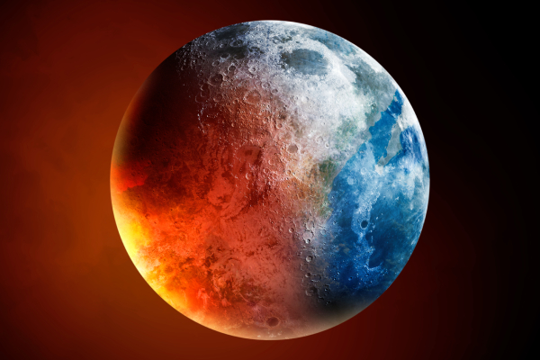

ภาวะโลกร้อน(Global Warming)
เกิดจากการสะสมของ ก๊าซเรือนกระจก ในชั้นบรรยากาศเป็นหลัก ซึ่งส่วนใหญ่มาจากการทำกิจกรรมของมนุษย์
เช่น การเผาไหม้เชื้อเพลิงฟอสซิล (ถ่านหิน, น้ำมัน, ก๊าซธรรมชาติ) เพื่อผลิตไฟฟ้า ขนส่ง และอุตสาหกรรม รวมถึงการ ตัดไม้ทำลายป่า และ การเกษตร
กิจกรรมที่ก่อให้เกิดก๊าซเรือนกระจก
ภาคพลังงาน: การผลิตไฟฟ้า ความร้อน และการขนส่งที่ใช้พลังงานจากเชื้อเพลิงฟอสซิลเป็นสาเหตุหลัก ภาคเกษตรกรรม: การทำนา การทำปศุสัตว์ และการใช้ปุ๋ยไนโตรเจน ก่อให้เกิดก๊าซมีเทน (\(CH_{4}\)) และไนตรัสออกไซด์ (\(N_{2}O\)) การตัดไม้ทำลายป่า: ต้นไม้ช่วยดูดซับก๊าซคาร์บอนไดออกไซด์ การตัดต้นไม้จึงลดความสามารถในการดูดซับก๊าซนี้ และยังปล่อยก๊าซคาร์บอนไดออกไซด์ออกมาเมื่อต้นไม้ถูกตัด ภาคอุตสาหกรรม: กระบวนการผลิตในโรงงานต่างๆ และการจัดการขยะ เช่น ขยะอิเล็กทรอนิกส์ การใช้ชีวิตประจำวัน: การใช้สินค้าอุปโภคบริโภค เช่น เสื้อผ้า พลาสติก และพฤติกรรมอื่นๆ ที่ก่อให้เกิดขยะและใช้พลังงาน |
ภาวะโลกร้อน (global warming) หมายถึงการเพิ่มขึ้นของอุณหภูมิเฉลี่ยของอากาศใกล้พื้นผิวโลกและน้ำในมหาสมุทรตั้งแต่ช่วงครึ่งหลังของคริสต์ศตวรรษที่ 20 และมีการคาดการณ์ว่าอุณหภูมิเฉลี่ยจะเพิ่มขึ้นอย่างต่อเนื่อง ในช่วง 100 ปีที่ผ่านมา นับถึง พ.ศ. 2548 อากาศใกล้ผิวดินทั่วโลกโดยเฉลี่ยมีค่าสูงขึ้น 0.74 ± 0.18 องศาเซลเซียส ซึ่งคณะกรรมการระหว่างรัฐบาลว่าด้วยการเปลี่ยนแปลงสภาพภูมิอากาศ (Intergovernmental Panel on Climate Change: IPCC) ของสหประชาชาติได้สรุปไว้ว่า “จากการสังเกตการณ์การเพิ่มอุณหภูมิโดยเฉลี่ยของโลกที่เกิดขึ้นตั้งแต่กลางคริสต์ศตวรรษที่ 20 (ประมาณตั้งแต่ พ.ศ. 2490) ค่อนข้างแน่ชัดว่าเกิดจากการเพิ่มความเข้มของแก๊สเรือนกระจกที่เกิดขึ้นโดยกิจกรรมของมนุษย์ที่เป็นผลในรูปของปรากฏการณ์เรือนกระจก” ปรากฏการณ์ธรรมชาติบางอย่าง เช่น ความผันแปรของการแผ่รังสีจากดวงอาทิตย์และการระเบิดของภูเขาไฟ อาจส่งผลเพียงเล็กน้อยต่อการเพิ่มอุณหภูมิในช่วงก่อนยุคอุตสาหกรรมจนถึง พ.ศ. 2490 และมีผลเพียงเล็กน้อยต่อการลดอุณหภูมิหลังจากปี 2490 เป็นต้นมา ข้อสรุปพื้นฐานดังกล่าวนี้ได้รับการรับรองโดยสมาคมและสถาบันการศึกษาทางวิทยาศาสตร์ไม่น้อยกว่า 30 แห่ง รวมทั้งราชสมาคมทางวิทยาศาสตร์ระดับชาติที่สำคัญของประเทศอุตสาหกรรมต่าง ๆ แม้นักวิทยาศาสตร์บางคนจะมีความเห็นโต้แย้งกับข้อสรุปของ IPCC อยู่บ้าง แต่เสียงส่วนใหญ่ของนักวิทยาศาสตร์ที่ทำงานด้านการเปลี่ยนแปลงของภูมิอากาศของโลกโดยตรงเห็นด้วยกับข้อสรุปนี้ แบบจำลองการคาดคะเนภูมิอากาศที่สรุปโดย IPCC บ่งชี้ว่าอุณหภูมิโลกโดยเฉลี่ยที่ผิวโลกจะเพิ่มขึ้น 1.1 ถึง 6.4 องศาเซลเซียส ในช่วงคริสต์ศตวรรษที่ 21 (พ.ศ. 2544–2643) ค่าตัวเลขดังกล่าวได้มาจากการจำลองสถานการณ์แบบต่าง ๆ ของการแผ่ขยายแก๊สเรือนกระจกในอนาคต รวมถึงการจำลองค่าความไวภูมิอากาศอีกหลากหลายรูปแบบ แม้การศึกษาเกือบทั้งหมดจะมุ่งไปที่ช่วงเวลาถึงเพียงปี พ.ศ. 2643 แต่ความร้อนจะยังคงเพิ่มขึ้นและระดับน้ำทะเลก็จะสูงขึ้นต่อเนื่องไปอีกหลายสหัสวรรษ แม้ว่าระดับของแก๊สเรือนกระจกจะเข้าสู่ภาวะเสถียรแล้วก็ตาม การที่อุณหภูมิและระดับน้ำทะเลเข้าสู่สภาวะดุลยภาพได้ช้าเป็นเหตุมาจากความจุความร้อนของน้ำในมหาสมุทรซึ่งมีค่าสูงมาก การที่อุณหภูมิของโลกเพิ่มสูงขึ้นทำให้ระดับน้ำทะเลสูงขึ้น และคาดว่าทำให้เกิดภาวะลมฟ้าอากาศสุดโต่ง (extreme weather) ที่รุนแรงมากขึ้น ปริมาณและรูปแบบการเกิดหยาดน้ำฟ้าจะเปลี่ยนแปลงไป ผลกระทบอื่น ๆ ของภาวะโลกร้อนได้แก่ การเปลี่ยนแปลงของผลิตผลทางเกษตร การเคลื่อนถอยของธารน้ำแข็ง การสูญพันธุ์พืช-สัตว์ต่าง ๆ รวมทั้งการกลายพันธุ์และแพร่ขยายโรคต่าง ๆ เพิ่มมากขึ้น แต่ยังคงมีความไม่แน่นอนทางวิทยาศาสตร์อยู่บ้าง ได้แก่ปริมาณของความร้อนที่คาดว่าจะเพิ่มในอนาคต ผลของความร้อนที่เพิ่มขึ้นและผลกระทบอื่น ๆ ที่จะเกิดกับแต่ละภูมิภาคบนโลกว่าจะแตกต่างกันอย่างไร รัฐบาลของประเทศต่าง ๆ แทบทุกประเทศได้ลงนามและให้สัตยาบันในพิธีสารเกียวโต ซึ่งมุ่งประเด็นไปที่การลดการปล่อยแก๊สเรือนกระจก แต่ยังคงมีการโต้เถียงกันทางการเมืองและการโต้วาทีสาธารณะไปทั่วทั้งโลกเกี่ยวกับมาตรการว่าควรเป็นอย่างไร จึงจะลดหรือย้อนกลับความร้อนที่เพิ่มขึ้นของโลกในอนาคต หรือจะปรับตัวกันอย่างไรต่อผลกระทบของภาวะโลกร้อนที่คาดว่าจะต้องเกิดขึ้น |